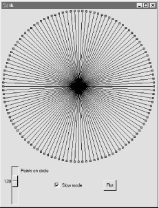
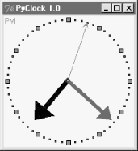
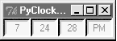
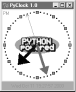
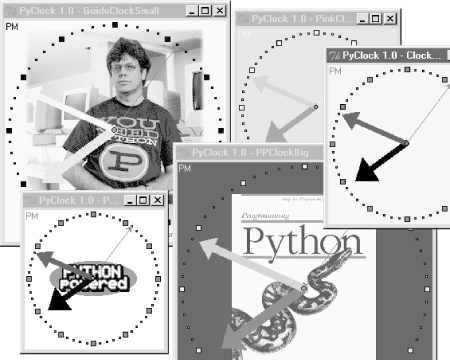

| I l@ve RuBoard |
|
9.7 PyClock: An Analog/Digital Clock WidgetOne of the first things I always look for when exploring a new computer interface is a clock. Because I spend so much time glued to computers, it's essentially impossible for me to keep track of the time unless it is right there on the screen in front of me (and even then, it's iffy). The next program, PyClock, implements such a clock widget in Python. It's not substantially different than clock programs you may be used to seeing on the X Windows system. Because it is coded in Python, though, this one is both easily customized, and fully portable among Windows, the X Windows system, and Macs, like all the code in this chapter. In addition to advanced GUI techniques, this example demonstrates Python math and time module tools. 9.7.1 A Quick Geometry LessonBefore I show you PyClock, though, a little background and a confession. Quick -- how do you plot points on a circle? This, along with time formats and events, turns out to be a core concept in clock widget programs. To draw an analog clock face on a canvas widget, you essentially need to be able to sketch a circle -- the clock face itself is composed of points on a circle, and the second, minute, and hour hands of the clock are really just lines from a circle's center out to a point on the circle. Digital clocks are simpler to draw, but not much to look at. Now the confession: when I started writing PyClock, I couldn't answer the last paragraph's opening question. I had utterly forgotten the math needed to sketch out points on a circle (as had most of the professional software developers I queried about this magic formula). It happens. After going unused for a few decades, such knowledge tends to be garbage-collected. I finally was able to dust off a few neurons long enough to code the plotting math needed, but it wasn't my finest intellectual hour. If you are in the same boat, I don't have space to teach geometry in depth here, but I can show you one way to code the point-plotting formulas in Python in simple terms. Before tackling the more complex task of implementing a clock, I wrote the plotterGui script shown in Example 9-21 to focus on just the circle-plotting logic. Its point function is where the circle logic lives -- it plots the (X,Y) coordinates of a point on the circle, given the relative point number, the total number of points to be placed on the circle, and the circle's radius (the distance from the circle's center to the points drawn upon it). It first calculates the point's angle from the top by dividing 360 by the number of points to be plotted, and then multiplying by the point number; in case you've forgotten, too, it's 360 degrees around the whole circle (e.g., if you plot 4 points on a circle, each is 90 degrees from the last, or 360/4). Python's standard math module gives all the required constants and functions from that point forward -- pi, sine, and cosine. The math is really not too obscure if you study this long enough (in conjunction with your old geometry text if necessary). See the book's CD for alternative ways to code the number crunching.[3]
Even if you don't care about the math, though, check out this script's circle function. Given the (X,Y) coordinates of a point on the circle returned by point, it draws a line from the circle's center out to the point and a small rectangle around the point itself -- not unlike the hands and points of an analog clock. Canvas tags are used to associate drawn objects for deletion before each plot. Example 9-21. PP2E\Gui\Clock\plotterGui.py# plot circles (like I did in high school)
import math, sys
from Tkinter import *
def point(tick, range, radius):
angle = tick * (360.0 / range)
radiansPerDegree = math.pi / 180
pointX = int( round( radius * math.sin(angle * radiansPerDegree) ))
pointY = int( round( radius * math.cos(angle * radiansPerDegree) ))
return (pointX, pointY)
def circle(points, radius, centerX, centerY, slow=0):
canvas.delete('lines')
canvas.delete('points')
for i in range(points):
x, y = point(i+1, points, radius-4)
scaledX, scaledY = (x + centerX), (centerY - y)
canvas.create_line(centerX, centerY, scaledX, scaledY, tag='lines')
canvas.create_rectangle(scaledX-2, scaledY-2,
scaledX+2, scaledY+2,
fill='red', tag='points')
if slow: canvas.update( )
def plotter( ):
circle(scaleVar.get(), (Width / 2), originX, originY, checkVar.get( ))
def makewidgets( ):
global canvas, scaleVar, checkVar
canvas = Canvas(width=Width, height=Width)
canvas.pack(side=TOP)
scaleVar = IntVar( )
checkVar = IntVar( )
scale = Scale(label='Points on circle', variable=scaleVar, from_=1, to=360)
scale.pack(side=LEFT)
Checkbutton(text='Slow mode', variable=checkVar).pack(side=LEFT)
Button(text='Plot', command=plotter).pack(side=LEFT, padx=50)
if __name__ == '__main__':
Width = 500 # default width, height
if len(sys.argv) == 2: Width = int(sys.argv[1]) # width cmdline arg?
originX = originY = Width / 2 # same as circle radius
makewidgets( ) # on default Tk root
mainloop( )
The circle defaults to 500 pixels wide unless you pass a width on the command line. Given a number of points on a circle, this script marks out the circle in clockwise order every time you press Plot, by drawing lines out from the center to small rectangles at points on the circle's shape. Move the slider to plot a different number of points, and click the checkbutton to make the drawing happen slow enough to notice the clockwise order in which lines and points are drawn (this forces the script to update the display after each line is drawn). Figure 9-19 shows the result for plotting 120 points with the circle width set to 400 on the command line; if you ask for 60 and 12 points on the circle, the relationship to clock faces and hands starts becoming more clear. Figure 9-19. plotterGui in actionFor more help, the book CD also includes text-based versions of this plotting script that print circle point coordinates to the stdout stream for review, rather than rendering them in a GUI. See the plotterText scripts in the clock's directory. Here is the sort of output they produce when plotting 4 and 12 points on a circle that is 400 points wide and high; the output format is simply: pointnumber : angle = (Xcoordinate, Ycoordinate) and assumes that the circle is centered at coordinate (0,0): ---------- 1 : 90.0 = (200, 0) 2 : 180.0 = (0, -200) 3 : 270.0 = (-200, 0) 4 : 360.0 = (0, 200) ---------- 1 : 30.0 = (100, 173) 2 : 60.0 = (173, 100) 3 : 90.0 = (200, 0) 4 : 120.0 = (173, -100) 5 : 150.0 = (100, -173) 6 : 180.0 = (0, -200) 7 : 210.0 = (-100, -173) 8 : 240.0 = (-173, -100) 9 : 270.0 = (-200, 0) 10 : 300.0 = (-173, 100) 11 : 330.0 = (-100, 173) 12 : 360.0 = (0, 200) ---------- To understand how these points are mapped to a canvas, you first need to know that the width and height of a circle are always the same -- the radius x 2. Because Tkinter canvas (X,Y) coordinates start at (0,0) in the upper left corner, the plotter GUI must offset the circle's center point to coordinates (width/2, width/2) -- the origin point from which lines are drawn. For instance, in a 400-by-400 circle, the canvas center is (200,200). A line to the 90-degree angle point on the right side of the circle runs from (200,200) to (400,200) -- the result of adding the (200,0) point coordinates plotted for the radius and angle. A line to the bottom at 180 degrees runs from (200,200) to (200,400) after factoring in the (0,-200) point plotted. This point-plotting algorithm used by plotterGui, along with a few scaling constants, is at the heart of the PyClock analog display. If this still seems a bit much, I suggest you focus on the PyClock script's digital display implementation first; the analog geometry plots are really just extensions of underlying timing mechanisms used for both display modes. In fact, the clock itself is structured as a generic Frame object that embeds digital and analog display objects, and dispatches time change and resize events to both the same way. The analog display is an attached Canvas that knows how to draw circles, but the digital object is simply an attached Frame with labels to show time components. 9.7.2 Running PyClockApart from the circle geometry bit, the rest of PyClock is straightforward. It simply draws a clock face to represent the current time and uses widget after methods to wake itself up 10 times per second to check if the system time has rolled over to the next second. On second rollovers, the analog second, minute, and hour hands are redrawn to reflect the new time (or the text of the digital display's labels is changed). In terms of GUI construction, the analog display is etched out on a canvas, is redrawn whenever the window is resized, and changes to a digital format upon request. PyClock also puts Python's standard time module into service to fetch and convert system time information as needed for a clock. In brief, the onTimer method gets system time with time.time, a built-in tool that returns a floating-point number giving seconds since the "epoch" -- the point from which your computer counts time. The time.localtime call is then used to convert epoch time into a tuple that contains hour, minute, and second values; see the script and Python library manual for additional time-related call details. Checking the system time 10 times per second may seem intense, but it guarantees that the second hand ticks when it should without jerks or skips (after events aren't precisely timed), and is not a significant CPU drain on systems I use.[4] On Linux and Windows, PyClock uses negligible processor resources, and what it does use is spent largely on screen updates in analog display mode, not after events. To minimize screen updates, PyClock redraws only clock hands on second rollovers; points on the clock's circle are redrawn at startup and on window resizes only. Figure 9-20 shows the default initial PyClock display format you get when file clock.py is run directly.
Figure 9-20. PyClock default analog displayThe clock hand lines are given arrows at their endpoints with the canvas line object's arrow and arrowshape options. The arrow option can be "first", "last", "none", or "both"; the arrowshape option takes a tuple giving the length of the arrow touching the line, its overall length, and its width. Like PyView, PyClock also uses the widget pack_forget and pack methods to dynamically erase and redraw portions of the display on demand (i.e., in response to bound events). Clicking on the clock with a left mouse button changes its display to digital by erasing the analog widgets and drawing the digital interface; you get the simpler display captured in Figure 9-21. Figure 9-21. PyClock goes digitalThis digital display form is useful if you want to conserve real estate on your computer screen and minimize PyClock CPU utilization (it incurs very little screen update overhead). Left-clicking on the clock again changes back to the analog display. The analog and digital displays are both constructed when the script starts, but only one is ever packed at any given time. A right mouseclick on the clock in either display mode shows or hides an attached label that gives the current date in simple text form. Figure 9-22 shows a PyClock running with a digital display, a clicked-on date label, and a centered photo image object. Figure 9-22. PyClock extended display with an imageThe image in the middle of Figure 9-22 is added by passing in a configuration object with appropriate settings to the PyClock object constructor. In fact, almost everything about this display can be customized with attributes in PyClock configuration objects -- hand colors, clock tick colors, center photos, and initial size. Because PyClock's analog display is based upon a manually sketched figure on a canvas, it has to process window resize events itself: whenever the window shrinks or expands, the clock face has to be redrawn and scaled for the new window size. To catch screen resizes, the script registers for the <Configure> event with bind; surprisingly, this isn't a top-level window manager event like the close button. As you expand a PyClock, the clock face gets bigger with the window -- try expanding, shrinking, and maximizing the clock window on your computer. Because the clock face is plotted in a square coordinate system, PyClock always expands in equal horizontal and vertical proportions, though; if you simply make the window only wider or taller, the clock is unchanged. Finally, like PyEdit, PyClock can be run either standalone or attached to and embedded in other GUIs that need to display the current time. To make it easy to start preconfigured clocks, a utility module called clockStyles provides a set of clock configuration objects you can import, subclass to extend, and pass to the clock constructor; Figure 9-23 shows a few of the preconfigured clock styles and sizes in action, ticking away in sync. Figure 9-23. A few canned clock styles (Guido's photo reprinted with permission from Dr. Dobb's Journal)Each of these clocks uses after events to check for system-time rollover 10 times per second. When run as top-level windows in the same process, all receive a timer event from the same event loop. When started as independent programs, each has an event loop of its own. Either way, their second hands sweep in unison each second. 9.7.3 PyClock Source CodePyClock source code all lives in one file, except for the precoded configuration style objects. If you study the code at the bottom of the file shown in Example 9-22, you'll notice that you can either make a clock object with a configuration object passed in, or specify configuration options by command line arguments (in which case, the script simply builds a configuration object for you). More generally, you can run this file directly to start a clock, import and make its objects with configuration objects to get a more custom display, or import and attach its objects to other GUIs. For instance, PyGadgets runs this file with command line options to tailor the display. Example 9-22. PP2E\Gui\Clock\clock.py###############################################################################
# PyClock: a clock GUI, with both analog and digital display modes, a
# popup date label, clock face images, resizing, etc. May be run both
# stand-alone, or embbeded (attached) in other GUIs that need a clock.
###############################################################################
from Tkinter import *
import math, time, string
###############################################################################
# Option configuration classes
###############################################################################
class ClockConfig:
# defaults--override in instance or subclass
size = 200 # width=height
bg, fg = 'beige', 'brown' # face, tick colors
hh, mh, sh, cog = 'black', 'navy', 'blue', 'red' # clock hands, center
picture = None # face photo file
class PhotoClockConfig(ClockConfig):
# sample configuration
size = 320
picture = '../gifs/ora-pp.gif'
bg, hh, mh = 'white', 'blue', 'orange'
###############################################################################
# Digital display object
###############################################################################
class DigitalDisplay(Frame):
def __init__(self, parent, cfg):
Frame.__init__(self, parent)
self.hour = Label(self)
self.mins = Label(self)
self.secs = Label(self)
self.ampm = Label(self)
for label in self.hour, self.mins, self.secs, self.ampm:
label.config(bd=4, relief=SUNKEN, bg=cfg.bg, fg=cfg.fg)
label.pack(side=LEFT)
def onUpdate(self, hour, mins, secs, ampm, cfg):
mins = string.zfill(str(mins), 2)
self.hour.config(text=str(hour), width=4)
self.mins.config(text=str(mins), width=4)
self.secs.config(text=str(secs), width=4)
self.ampm.config(text=str(ampm), width=4)
def onResize(self, newWidth, newHeight, cfg):
pass # nothing to redraw here
###############################################################################
# Analog display object
###############################################################################
class AnalogDisplay(Canvas):
def __init__(self, parent, cfg):
Canvas.__init__(self, parent,
width=cfg.size, height=cfg.size, bg=cfg.bg)
self.drawClockface(cfg)
self.hourHand = self.minsHand = self.secsHand = self.cog = None
def drawClockface(self, cfg): # on start and resize
if cfg.picture: # draw ovals, picture
try:
self.image = PhotoImage(file=cfg.picture) # bkground
except:
self.image = BitmapImage(file=cfg.picture) # save ref
imgx = (cfg.size - self.image.width( )) / 2 # center it
imgy = (cfg.size - self.image.height( )) / 2
self.create_image(imgx+1, imgy+1, anchor=NW, image=self.image)
originX = originY = radius = cfg.size/2
for i in range(60):
x, y = self.point(i, 60, radius-6, originX, originY)
self.create_rectangle(x-1, y-1, x+1, y+1, fill=cfg.fg) # mins
for i in range(12):
x, y = self.point(i, 12, radius-6, originX, originY)
self.create_rectangle(x-3, y-3, x+3, y+3, fill=cfg.fg) # hours
self.ampm = self.create_text(3, 3, anchor=NW, fill=cfg.fg)
def point(self, tick, units, radius, originX, originY):
angle = tick * (360.0 / units)
radiansPerDegree = math.pi / 180
pointX = int( round( radius * math.sin(angle * radiansPerDegree) ))
pointY = int( round( radius * math.cos(angle * radiansPerDegree) ))
return (pointX + originX+1), (originY+1 - pointY)
def onUpdate(self, hour, mins, secs, ampm, cfg): # on timer callback
if self.cog: # redraw hands, cog
self.delete(self.cog)
self.delete(self.hourHand)
self.delete(self.minsHand)
self.delete(self.secsHand)
originX = originY = radius = cfg.size/2
hour = hour + (mins / 60.0)
hx, hy = self.point(hour, 12, (radius * .80), originX, originY)
mx, my = self.point(mins, 60, (radius * .90), originX, originY)
sx, sy = self.point(secs, 60, (radius * .95), originX, originY)
self.hourHand = self.create_line(originX, originY, hx, hy,
width=(cfg.size * .04),
arrow='last', arrowshape=(25,25,15), fill=cfg.hh)
self.minsHand = self.create_line(originX, originY, mx, my,
width=(cfg.size * .03),
arrow='last', arrowshape=(20,20,10), fill=cfg.mh)
self.secsHand = self.create_line(originX, originY, sx, sy,
width=1,
arrow='last', arrowshape=(5,10,5), fill=cfg.sh)
cogsz = cfg.size * .01
self.cog = self.create_oval(originX-cogsz, originY+cogsz,
originX+cogsz, originY-cogsz, fill=cfg.cog)
self.dchars(self.ampm, 0, END)
self.insert(self.ampm, END, ampm)
def onResize(self, newWidth, newHeight, cfg):
newSize = min(newWidth, newHeight)
#print 'analog onResize', cfg.size+4, newSize
if newSize != cfg.size+4:
cfg.size = newSize-4
self.delete('all')
self.drawClockface(cfg) # onUpdate called next
###############################################################################
# Clock composite object
###############################################################################
ChecksPerSec = 10 # second change timer
class Clock(Frame):
def __init__(self, config=ClockConfig, parent=None):
Frame.__init__(self, parent)
self.cfg = config
self.makeWidgets(parent) # children are packed but
self.labelOn = 0 # clients pack or grid me
self.display = self.digitalDisplay
self.lastSec = -1
self.onSwitchMode(None)
self.onTimer( )
def makeWidgets(self, parent):
self.digitalDisplay = DigitalDisplay(self, self.cfg)
self.analogDisplay = AnalogDisplay(self, self.cfg)
self.dateLabel = Label(self, bd=3, bg='red', fg='blue')
parent.bind('<ButtonPress-1>', self.onSwitchMode)
parent.bind('<ButtonPress-3>', self.onToggleLabel)
parent.bind('<Configure>', self.onResize)
def onSwitchMode(self, event):
self.display.pack_forget( )
if self.display == self.analogDisplay:
self.display = self.digitalDisplay
else:
self.display = self.analogDisplay
self.display.pack(side=TOP, expand=YES, fill=BOTH)
def onToggleLabel(self, event):
self.labelOn = self.labelOn + 1
if self.labelOn % 2:
self.dateLabel.pack(side=BOTTOM, fill=X)
else:
self.dateLabel.pack_forget( )
self.update( )
def onResize(self, event):
if event.widget == self.display:
self.display.onResize(event.width, event.height, self.cfg)
def onTimer(self):
secsSinceEpoch = time.time( )
timeTuple = time.localtime(secsSinceEpoch)
hour, min, sec = timeTuple[3:6]
if sec != self.lastSec:
self.lastSec = sec
ampm = ((hour >= 12) and 'PM') or 'AM' # 0...23
hour = (hour % 12) or 12 # 12..11
self.display.onUpdate(hour, min, sec, ampm, self.cfg)
self.dateLabel.config(text=time.ctime(secsSinceEpoch))
self.after(1000 / ChecksPerSec, self.onTimer) # run N times per second
###############################################################################
# Stand-alone clocks
###############################################################################
class ClockWindow(Clock):
def __init__(self, config=ClockConfig, parent=None, name=''):
Clock.__init__(self, config, parent)
self.pack(expand=YES, fill=BOTH)
title = 'PyClock 1.0'
if name: title = title + ' - ' + name
self.master.title(title) # master=parent or default
self.master.protocol('WM_DELETE_WINDOW', self.quit)
###############################################################################
# Program run
###############################################################################
if __name__ == '__main__':
def getOptions(config, argv):
for attr in dir(ClockConfig): # fill default config obj,
try: # from "-attr val" cmd args
ix = argv.index('-' + attr)
except:
continue
else:
if ix in range(1, len(argv)-1):
if type(getattr(ClockConfig, attr)) == type(0):
setattr(config, attr, int(argv[ix+1]))
else:
setattr(config, attr, argv[ix+1])
import sys
config = ClockConfig( )
#config = PhotoClockConfig( )
if len(sys.argv) >= 2:
getOptions(config, sys.argv) # clock.py -size n -bg 'blue'...
myclock = ClockWindow(config, Tk( )) # parent is Tk root if standalone
myclock.mainloop( )
And finally, Example 9-23 shows the module that is actually run from the PyDemos launcher script -- it predefines a handful of clock styles, and runs six of them at once attached to new top-level windows for demo effect (though one clock per screen is usually enough in practice, even for me).[5]
Example 9-23. PP2E\Gui\Clock\clockStyles.pyfrom clock import *
from Tkinter import mainloop
gifdir = '../gifs/'
if __name__ == '__main__':
from sys import argv
if len(argv) > 1:
gifdir = argv[1] + '/'
class PPClockBig(PhotoClockConfig):
picture, bg, fg = gifdir + 'ora-pp.gif', 'navy', 'green'
class PPClockSmall(ClockConfig):
size = 175
picture = gifdir + 'ora-pp.gif'
bg, fg, hh, mh = 'white', 'red', 'blue', 'orange'
class GilliganClock(ClockConfig):
size = 550
picture = gifdir + 'gilligan.gif'
bg, fg, hh, mh = 'black', 'white', 'green', 'yellow'
class GuidoClock(GilliganClock):
size = 400
picture = gifdir + 'guido_ddj.gif'
bg = 'navy'
class GuidoClockSmall(GuidoClock):
size, fg = 278, 'black'
class OusterhoutClock(ClockConfig):
size, picture = 200, gifdir + 'ousterhout-new.gif'
bg, fg, hh = 'black', 'gold', 'brown'
class GreyClock(ClockConfig):
bg, fg, hh, mh, sh = 'grey', 'black', 'black', 'black', 'white'
class PinkClock(ClockConfig):
bg, fg, hh, mh, sh = 'pink', 'yellow', 'purple', 'orange', 'yellow'
class PythonPoweredClock(ClockConfig):
bg, size, picture = 'white', 175, gifdir + 'pythonPowered.gif'
if __name__ == '__main__':
for configClass in [
ClockConfig,
PPClockBig,
#PPClockSmall,
GuidoClockSmall,
#GilliganClock,
OusterhoutClock,
#GreyClock,
PinkClock,
PythonPoweredClock
]:
ClockWindow(configClass, Toplevel( ), configClass.__name__)
Button(text='Quit Clocks', command='exit').pack( )
mainloop( )
|
| I l@ve RuBoard |
|